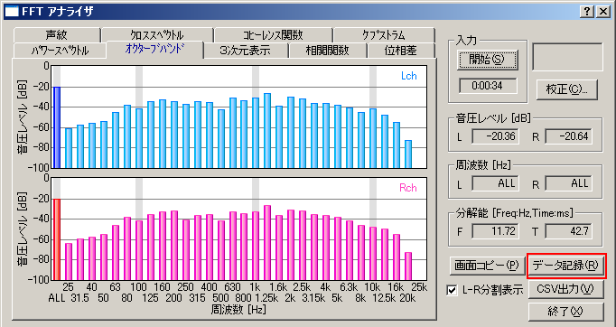
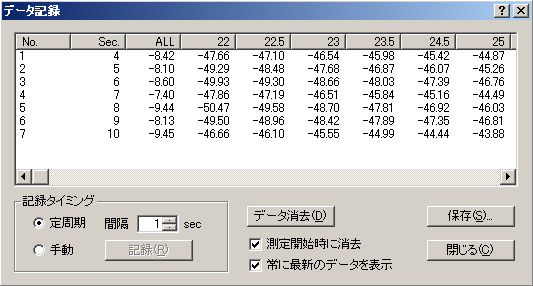
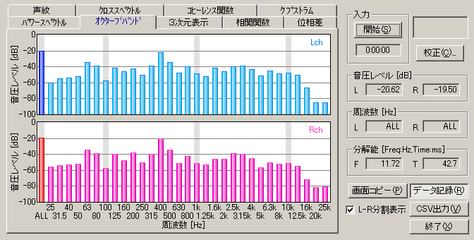

DSSF3 > RA > リファレンス > FFTアナライザ
データ記録画面

FFTアナライザでオクターブバンド画面を開いた時のみ、[データ記録]ボタンがクリックできます。クリックすると、下のようなデータ記録画面が開きます。

記録タイミングを手動に設定した場合は、測定を開始してから[記録]ボタンを押した瞬間のレベルが記録されます。記録されたデータはCSV形式で保存できますので、エクセルなどの表計算ソフトで編集、加工が可能になります。
定周期を使用して、レコード記録機能を使用すれば、任意の時間間隔で測定結果（オクターブ分析の結果や1/3オクターブ分析の結果がが自動でCSV出力できます。オクターブ分析の場合、音響信号の音圧レベルと、バンド帯の音圧レベルがバンドの数だけ、カンマ区切りでワンレコード出力されます。レコードの区切りは、CRです。これがCSVつまりカンマ・セパレーテッド・バリュー・ファイルの形式です。このCSVファイルはエクセルや、アクセスはもちろん、いろいろなソフトで、読み込み可能な形式です。もちろんこのデータを使えば、道路や住宅地や、工場騒音、飛行機騒音などの、騒音指標を計算できます。もちろんワンタッチで測定レポートが出せるような、エクセルなどのソフトも簡単に作れます。簡単に業務で使用できる騒音測定のソフトが作れます。

DSSF3 > RA > リファレンス > FFTアナライザ